01 · 借机基线：Shadow
先找浙大，其次华南理工、大连理工。5 轴拇指和关节本地霍尔很贴题，前臂驱动让手指附近少了一个主要热源；先核实手背实温与四指 DIP 原始反馈。
用实际关节角做液态金属拉伸传感贴的标定参考。先借 Shadow 验证拇指、被动关节与冷态贴面，再对比国产全驱动手；同时用开源关节或自制骨架，做手动、轴端测角的冷态台架。
公开版｜附有许可的图片与整手模型可直接浏览；其余配图提供官网、论文或项目图源。评级仅保存在当前浏览器。
先找浙大，其次华南理工、大连理工。5 轴拇指和关节本地霍尔很贴题，前臂驱动让手指附近少了一个主要热源；先核实手背实温与四指 DIP 原始反馈。
22 手部轴、5 轴拇指、双编码器。优先约杭州宇树，再约强脑 Revo 3；另向因时 RH524J1 要样机，比较手背贴装与热源布置。
先做拇指＋食指，逐轴测角，换软皮和预拉伸做可重复校准。自动化需求明确后，优先看港大 MM-Hand 的 21 轴外置腱驱。
预约状态：共享目录表示有对接入口；成交、培训和论文各只说明有采购记录或做过实物。没有一家已确认向外借出、允许粘贴或可立即到货。没有公开的同工况贴面温升数据能支撑采购结论。
手长量腕横纹到中指尖，掌宽在四指根处横量（不含拇指）。默认 180 × 80 mm 只是示例。模型尺寸取展示姿态的包络，与人手只能粗比；即使大小相近，贴片分叉仍可能对不齐。
正在载入尺寸与三维资料；如未载入，可用下方来源链接查看。
查看器已移到您刚打开的条目右侧。
加载三维几何…
贴装实测：把当前贴片按 1:1 做一张透明模板，在伸直、拇指对食和拇指对小指三姿对位。量腕到中指、掌宽、拇指根到食指 MCP 的距离，并检查拇指分支是否悬空、翻折或被硬边顶起。再量冷机、动作中和持续保持时的拇指根／掌背温度，用贴片自身的温度上限判定。三维只显示几何，不能代替这两项验机。
以约 20 个手部运动轴为初筛；把腕轴、被动轴和独立驱动单列。低于阈值的机型只在明示用途时保留。点击任意条目，可查看联系渠道、局限及证据来源。列表直接显示外形缩略图，展开可点原图并查看来源。38 / 46 项有对应的产品图、设备图或明确标注的参照图；型号未公开或图片区分不清的记录保留占位。原站图片加载失败时仍可点击图片来源。网页价格为公开快照；高教系统成交价不作独立手报价。
评级保存于当前浏览器；不改变原调研优先度。
共 46 项
历史对照：团队前身原型在 Robodex 2002 展出；图中为 2004 商业化气动版。右侧 E3M5 三维是后来的电动版本。
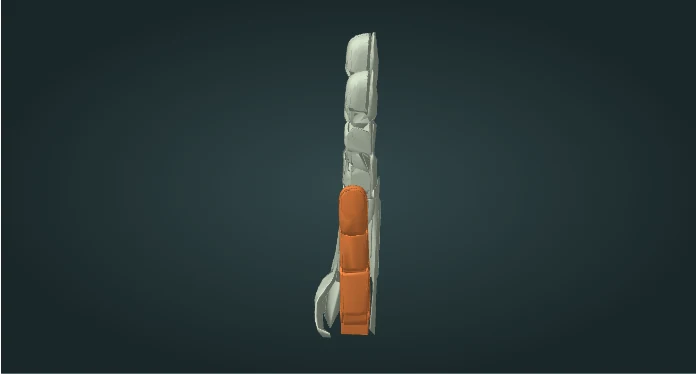
来源：宇树规格与询价 ↗
来源：因时发布 ↗
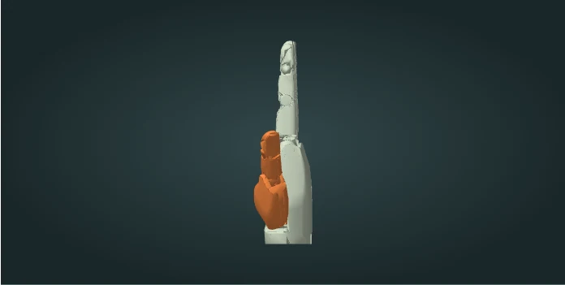
来源：Wave 官方规格 ↗
来源：灵心巧手官网 ↗
来源：灵心巧手官网 ↗
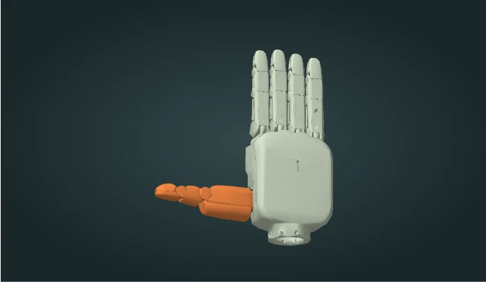
来源：Apex 官网 ↗
来源：Tesollo 规格 ↗
来源：兆威灵巧手官网 ↗
来源：浙大仪器页 ↗
来源：大工设备页 ↗
来源：学院设备页 ↗
来源：原中标公告转载 ↗
来源：南理工成交公告 ↗
来源：哈工大苏州中标 ↗
来源：上交/厂商论文 ↗
公开资料未披露设备型号；此条仅供联系与核实。
来源：课题组页面 ↗
公开资料未披露设备型号；此条仅供联系与核实。
公开资料未披露设备型号；此条仅供联系与核实。
来源：上海大学采购意向 ↗
公开资料未披露设备型号；此条仅供联系与核实。
来源：校方招采公告 ↗
来源：沈阳自动化所设备页 ↗
来源：作者论文 ↗
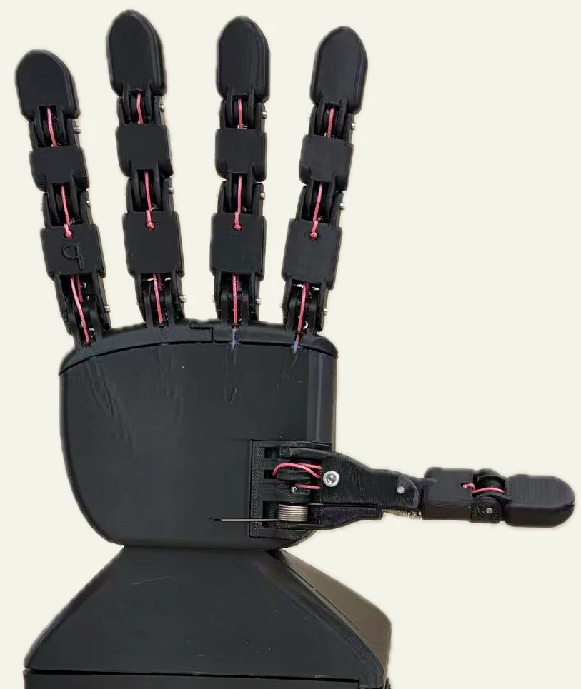
已核对的整手可在对应图片右侧旋转查看；单指夹具与零件有独立入口。评级沿用候选库的星级筛选。目标是下载五指和手掌的 STEP／STP，在 SolidWorks 加机械轴、限位与编码器座，再自行打印。优先看无需电机、可手拨、指节分件且比例接近人手的模型。整手装配、真实打印件和许可分开核对；目前没有同时确认无电机、20 多个独立可测轴、完整 STEP 和可打印的整手模型。
作者列出整手 STEP、打印件和爆炸图，可看无电机的销轴和拇指布局。掌罩只有 STL，指节有联动，不能直接逐轴扫角。
有作者实物照、手动关节和装配说明，未找到 STEP。适合照着机构挑选设计，也值得向作者问整手 CAD。
Make-A-Print 同作者页列出 8 个分件 STEP，可看离散挡位结构。若要连续、重复扫角，可结合 Rice / UT 单指 改成带限位的可测轴。
UJI 团队义肢实拍局部；照片未标注具体 CAD 版本
机械腱驱、旋钮和连动指；非 20 轴
文件：作者在 Zenodo 列 整体 STEP、打印件 ZIP 和爆炸图，CC BY 4.0；STEP 缺掌罩（另有 STL）。附件端点本次未打开。
改装：钢销与无电机方案适合参考。拇、食、中共用拉索，环、小指共享蜗轮机构；拇指方向另调，无法直接做逐轴扫角。
作者实物照片
作者标称 22 个被动活动轴
文件：左右手可打印配置、装配说明和实物，未见完整 STEP；Standard Digital File License。
改装：最接近「不通电手摆」的形态示例，含拇指对掌与掌弓机构。现有下载不能满足 SolidWorks 整手改件与发布需求。
作者 MakerWorld 配图
无电机，离散挡位
文件：Make-A-Print 发布页列 STEP、打印配置和装配 PDF；同作者 Printables 左手款确认有 8 个分件 STEP；未见整手装配。MakerWorld 页面标 CC BY-NC。
改装：可低成本打印并手摆；卡位机构不等同连续扫角，拇指对掌和四指侧摆需现场核对。
Rice 项目三指测角样机（未裁切原图） · 图片来源 ↗
论文整手 8 路测角（拇 4、食／中各 2）
文件：拆查官网下载 ZIP：Rice 是单指 SolidWorks 装配与零件；UT 有 Assem1.STEP，也是单指。未发现可下载的五指整手装配。
改装：最贴合无电机的测角思路；先参考单指包，验证打印铰轴、磁编码器装配和贴片曲线。图中是论文的三指样机。单指下载附件另放在「夹具和零件」区。
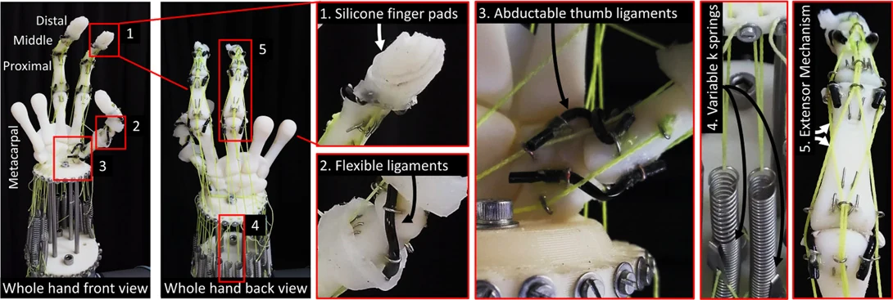
Gilday 等（2021）图 2：被动手正反面和局部结构，CC BY 4.0 · 图片来源 ↗
柔性被动机构；非离散轴数
文件：已核到剑桥机构库的原论文与正反面图；这篇论文的数据声明为向作者索取，未核实同款整手 STEP。
改装：有 3D 打印骨段、弹性关节结构与硅胶指垫；手在外力作用下变形。可参考低热、被动和背皮，但柔性关节没有稳定的单一旋转轴，逐轴编码须重新构造。
UT 单指夹具：由作者 Assem1.STEP 渲染（省略大台面） · 图片来源 ↗
单指试验台
原始附件包含 Assem1.STEP、BOM 和论文。适合看独立指节和测角安装，原装配没有掌部或其余四指。
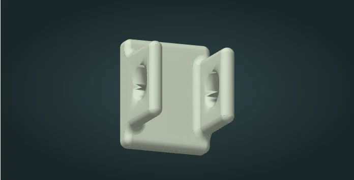
公开版配图：指根铰链 V2 零件开放模型渲染。原参考：V2 指根铰链：由作者 STEP 渲染 · 图片来源 ↗
来自作者原始 STEP
单件结构参考 · MIT
附件：作者发布 V2 铰链和 V3 外指节两个 STEP；只确认分件，不是带编码器的总装。
改装：团队样机靠人体牵引，原型无电机。查看铰链与零件拆分，从 UT 夹具借轴端测角做法；不能替代一整只可测角假手。
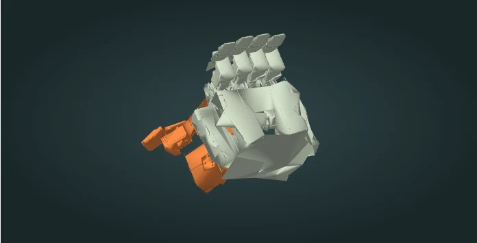
公开版配图：LEAP Hand V2 Advanced 右手原厂 URDF 整手开放模型渲染。原参考：原项目样机
21 个关节运动 / 17 个电机
文件：官方左右整手 STP、分件 STP、3MF、BOM 与装配；CAD 标 CC BY-NC-SA。右侧用原厂 URDF 的装配构型，STP 则为分开展示的零件布局。
改装：掌内两处主动轴适合参考掌弓；部分手指靠 TPU 柔性段和腱联动，PIP/DIP 不宜直接当独立已测角。若做冷台架，先拆驱动，改成有轴心和限位的指节。
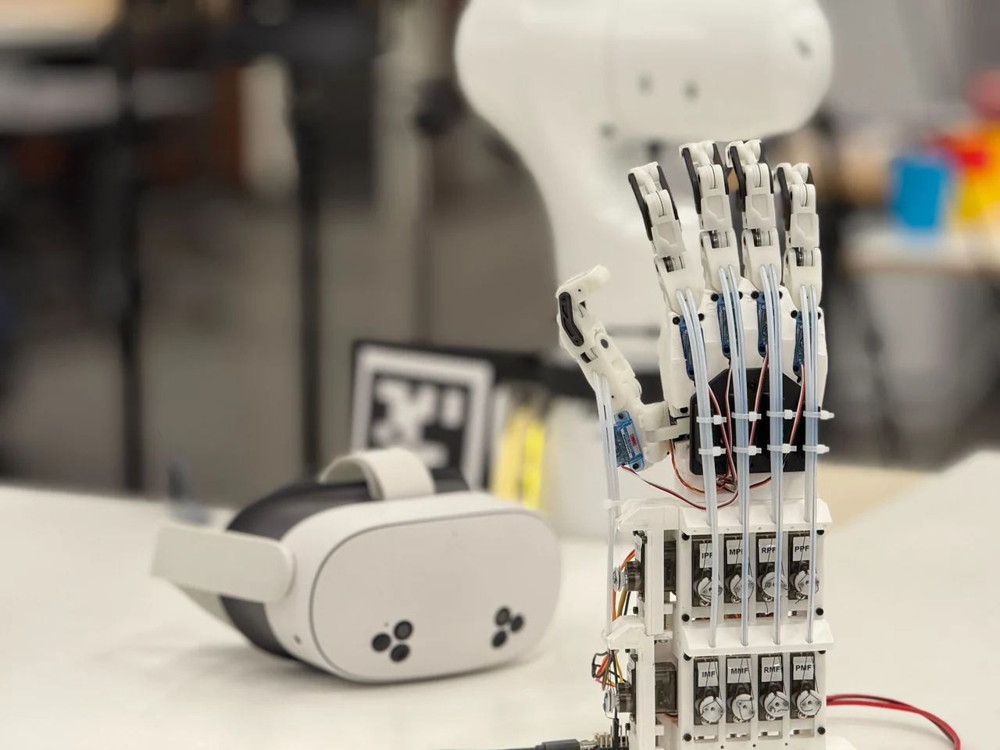
作者项目预览
21 个机械关节 / 16 独立轴
文件：作者仓库 MIT；整手 STEP（约 41 MB，Git LFS 真文件）和分件 STL。
改装：外置腱驱，拇指有 4 个独立自由度；四长指 PIP/DIP、拇指 IP 有机械耦合。优先拿来改拇指和食指；需要逐节测角时，把联动机构改成可独立锁止的实体铰轴。
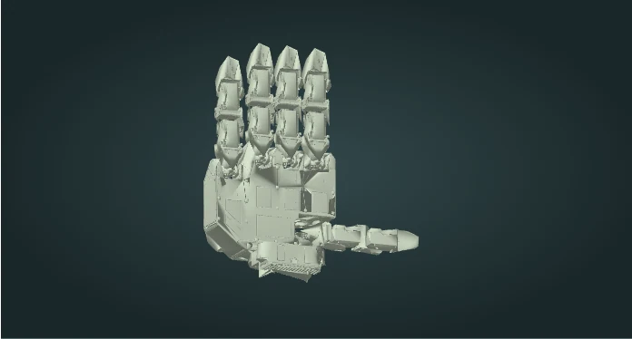
公开版配图：RAPID Hand 整手总装开放模型渲染。原参考：作者论文：整手尺寸、拇指和手指布局
公开装配 18 主动；论文设计口径 20
文件：整手 rapidhand.STEP（约 43 MB）、单指和拇指 STEP、FDM 打印件、BOM；作者声明 CC BY-NC-SA 4.0。
改装：四长指的 PIP 和 DIP 能分别运动，适合先改长指。拇指只有 2 轴，完整对掌和拇指测角需另做设计；动力版的温升需另测。
ORCA v1 论文主图
17 轴，含 1 腕轴
文件：约 41 MB 整手 STEP、逐件 STL、装配资料，硬件仓库 CC BY 4.0。
改装：适合拆指看腱路和打印结构；部分关节耦合、外壳皮层和布局为机器人设计。v1 的 CAD 不等于 v2.1 的测角性能或配置。
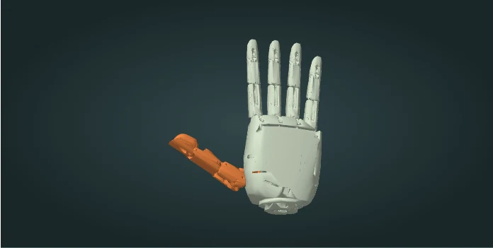
公开版配图：Aero Hand Open 右手开放模型渲染。原参考：作者仓库产品图
16 个机械关节 / 7 个主动轴
文件：左右整手 STP、一键 3MF、硅胶皮层模具和 BOM；硬件 CC BY-NC-SA 4.0。
改装：文件齐，适合打样看贴片背皮、线缆通路和拉伸路径，但运动耦合较多，不适合直接做 20 多轴参考。
作者 Hackaday 项目配图
6 个主动轴
文件：作者 ZIP 内有 Global assembly.stp 和 14 个单件 STP；可 PLA 打印，有皮层相关设计；作者论文的资料发布说明标 CC BY-NC。
改装：直观看仿人外壳、关节与硅胶包覆。驱动和动作自由度远低于目标，不作为整手测角基座。
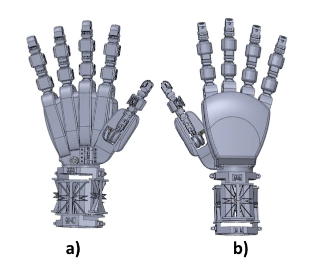
作者 CAD 图
多关节柔性结构；非逐铰轴
文件：手、腕、前臂完整 STEP、分件 STL 和装配说明；Apache-2.0。
改装：柔性铰链会分布式变形，难直接用轴端编码器；可取掌体、背皮和安装部位作设计参考。
作者机构图
24 含 2 腕轴；手部 22
文件：整手 robot_hand_assembly.step（约 11.6 MB）、整手和分件 STL 都可下载；仓库自称开源，但未找到明确许可；总装说明仍在建设，BOM 链接未见文件。
改装：仿人骨段、拇指/长指指根球窝和独立 PIP/DIP 销铰很贴题。用它比较手型和空间；真球窝不能靠单枚同轴编码器拆角，建议改成串联铰轴。公开改件前向作者确认许可。
作者仓库配图
21 含 2 腕轴；手部 19
文件：整手 STEP（Git LFS 真文件约 47 MB）、打印 STL 包；仓库未找到明确许可。
改装：拇指 5 轴是可借鉴点；原样机使用形状记忆合金热驱动，不适合直接贴温敏传感贴。只看骨节、轴位和无动力改造，公开改件前询许可。
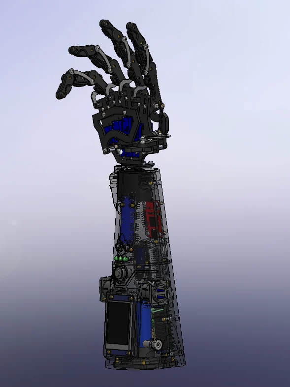
作者 CAD 渲染
四长指各单驱，指节联动
文件：有 94 MB 完整 STEP；作者尚未制造整手。现有 STL 主要是基座、法兰和前臂件；五指需自己导出。CC BY-NC-SA 4.0。
改装：外壳轮廓可作外观参考，不能把 CAD 渲染当成实物。拇指无专用对掌执行器。
同项目 V2 实验 CAD 图（非 V1 实物）
20 关节 / 16 驱动
文件：有整手 STEP 和 CERN-OHL-S-2.0 许可；作者将可复刻状态和全套打印文件列为进行中。
改装：可比较几何；已展示的 V0 主要是拇、食两指，不能把 V1 当成已完成的一键打印方案。
作者硬件测试视频实拍：四指手近景 · 图片来源 ↗
四指 / 16 轴 / 13 主动
文件：官方说明有整手 STEP 和 Bambu 3MF，硬件 CERN-OHL-P-2.0；下载入口有表单，本次未取得压缩包。
改装：少一根手指，不用于整手传感贴最终覆盖。
作者仿真预览
设计标称 22 轴、34 打印件
文件：网页 3D 可摆；作者说有 OpenSCAD 和 STEP 导出，未找到公开 CAD 下载和许可。
改装：外置电机、实体销轴和远端腱路可参考。浏览器能摆动作不代表文件开放、已经制造或轴间独立性已实测。
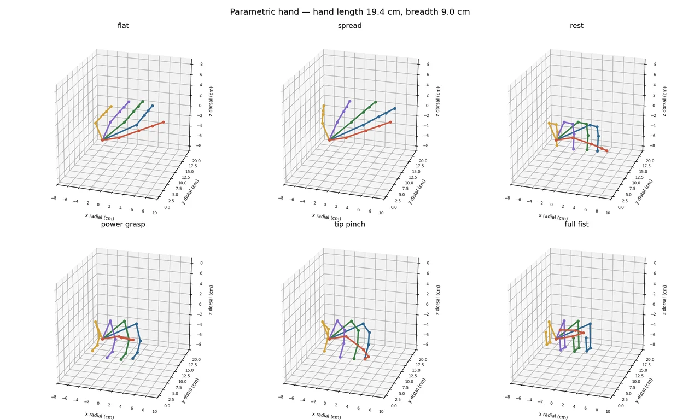
作者运动学模型图
按人手比例与轴线生成
文件：MIT；支持导出分骨 STEP/STL 与虚拟关节参数。不是带实物铰轴、限位和装配指南的整套可打样模型。
改装：可按手长和掌宽生成参考几何，再自行设计双轴指根、销铰、编码器座和可换背皮。
作者硬件结构图
项目页：16 手部轴 + 2 腕轴
文件：有打印文件和作者 Onshape 模型；未核到即下即用的整手 STEP，Onshape 导出权限另验。
改装：磁角传感器和可拆模块可借鉴；PIP/DIP 耦合。
作者项目五指方案的 Blender 渲染 · 图片来源 ↗
多指模块
文件：有 SolidWorks 原生五指装配和分件/打印 STL，未见现成整手 STEP。
改装：原生可编辑程度可能更好；下载后须检查引用是否齐全，再从 SolidWorks 导出整手 STEP。许可另核。
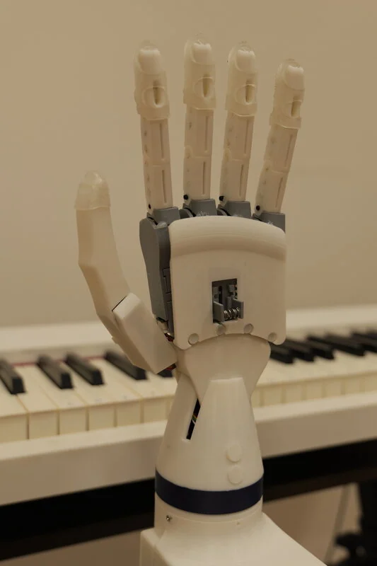
作者实物照片
7 主动轴，含腕部 2 轴
文件：有 full hand FINAL.SLDASM 与 SLDPRT、STL、BOM 和装配说明；Apache-2.0；STEP 只有外购件。
改装：可直接从 SolidWorks 原生装配修改并自行导出。长指欠驱动，公共侧摆有离散挡位，不能作高轴数成品。
2026 年 11 月 19 日核对。淘宝公开索引和官方导购页有标题写 STEP／STP 的数字模型线索，但没有核实到哪件明确交付可拆分、可打印的无电机五指整手。闲鱼站内搜索提示登录，公开索引未找到可核的商品。这里只列电子图纸线索；图片能看外形，不能证明包内有整手 STEP。
淘宝官方导购商品封面
STEP 写在标题 · 优先索要目录
合集包含机械手和手臂类别；先让卖家指出具体哪套是无电机五指整手，并给同一套的总装和指节样件。公开页没列附件，也未证实可打印。
STP 写在标题 · 可打印待核
公开页未展示可核对的图纸商品图。标题同时列 Rhino、C4D、3ds Max 和 OBJ，公开参数写「犀牛模型」。可调动作可能是软件摆姿势；需确认有实际销铰、独立实体和可加工的孔位。
淘宝官方导购商品封面
有数字图纸线索 · STEP 未确认
标题同时包含机械掌、机械臂和假手。先要文件清单，确认哪套为五指分件、能否按原尺寸打印；没有 STEP 样件就不作为合格候选。
次级线索：淘宝 仿人五指灵巧手 1395872 标题只有 SW，尚未证实交付整手 STEP 或是无电机结构。闲鱼：仿生手 STEP 图纸 ↗、可动假手 STP 数模 ↗ 为搜索入口。
我只买电子图纸，要在 SolidWorks 里加编码器座再自行打印。有没有无电机、可以手拨的五指假手？请发文件清单、整手 STEP／STP 的 SolidWorks 装配树和手背截图，最好给一根手指的 STEP 样件。需要掌体和各指节是可分别隐藏、改孔的实体，有可拆转轴；请注明哪些关节会联动，以及文件能否修改、自行打印。STL／OBJ 转壳再另存为 STP 的不适用。
能做。编码器负责测角；可重复摆位还需要机械铰轴、锁止或外置驱动。柔软且随处可弯的手，若无已知轴心和限位，编码器很难区分手指转角、骨件间移位和皮层形变。目标是覆盖传感贴关心的轴与姿态，不把任意形变都计为人手自由度。
外推边界：假手编码器可作假手机械轴的参考，手背贴片校准得到的是该骨架、皮层和预拉伸条件下的关系。若下一步要直接量真人，可参考AdvDex 的编码器手套，另做可穿戴外骨骼或其他独立参考，对齐人体转轴并验证穿戴滑移、软组织和个体差异；不能直接沿用假手角度映射。
带纸质贴片轮廓和拟采动作：张开、四指分别侧摆，MCP 屈曲状态下再侧摆，PIP/DIP 分别弯曲，拇指 IP 独动、外展、对食指与对小指、对掌，小指掌弓。拍正面、背面、侧面，记录行程、互相带动、夹点及表面弧长变化。示范抓住物体不算通过。
要求一份带时间戳的 CSV 或 SDK 示例。逐轴标明实测关节侧、实测电机侧、被动未测或模型推算；用锁定/轻推测试区分目标回显与实际反馈，静态点用独立角度量具核对。测实际日志速率、丢包、延迟及抖动，再设计同步。
先用替代试条；在掌背、拇指 CMC、食中指 MCP/PIP、手背靠腕处贴薄型温度探头，记录环境与内部温度另列。空载往返＋代表性持姿分别跑 30 分钟或到达稳定；若仍上升则延长，记录峰值、稳态温升和零点漂移。用现有舞肌一代同工况作对照；先量传感贴会实际覆盖的位置，勿只读电机遥测。反光金属用接触测温或经校正的高发射率测点。
先在独立试条上测材料、封装和胶的可用温度及零漂，按最低限制留余量；阈值未知就先不贴正式传感器。确认软皮可拆换与贴附许可，实际角与热都通过后才决定买裸手、套件或继续共用。
您好，我们想预约一次短时联合实验，用单手灵巧手贴可移除的轻量试条，校准液态金属拉伸传感贴。请问可用的型号、左右手和开放方式？能否提供分关节的轴表、动作范围、带设备时间戳的实际关节角样例（含被动轴，注明是输出端还是电机端，并区分目标角），以及拇指对掌、四指侧摆和 PIP/DIP 的短视频？首次测试只做空载和轻量持姿，并用接触温度探头测手背、拇指根和 MCP；会事先确认贴附、防护及数据导出许可。如可采购，也请提供独立手含电源/通信套件的报价、交期与到场试机方式。
研究决策（2026 年 11 月 19 日）：Leap Motion 和早期贴点动捕保留为历史参照。当前调研只定义机械角度基准与验证办法，未替换任何现有采集程序或数据协议。